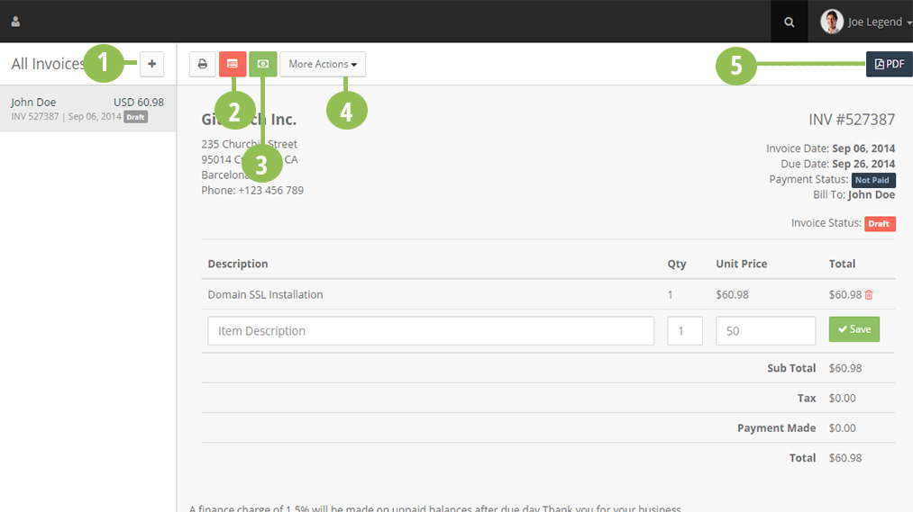
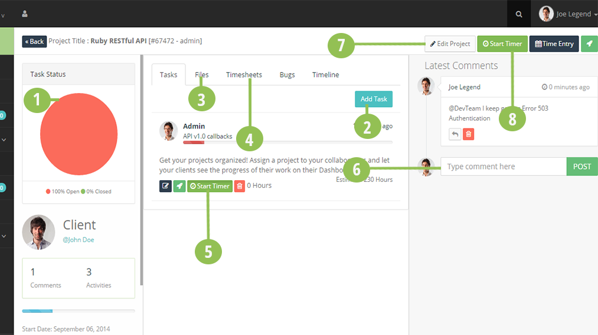
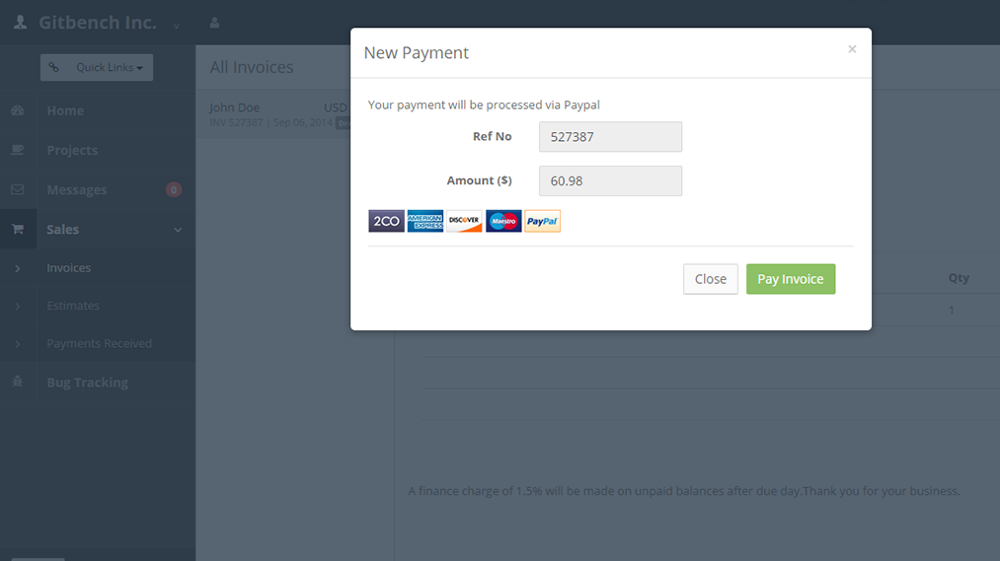
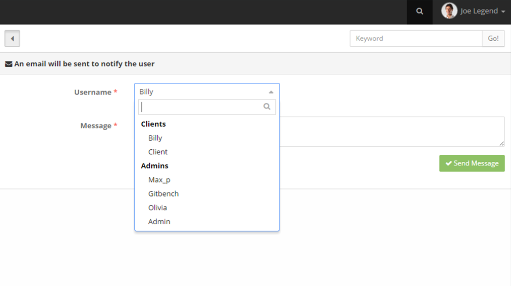
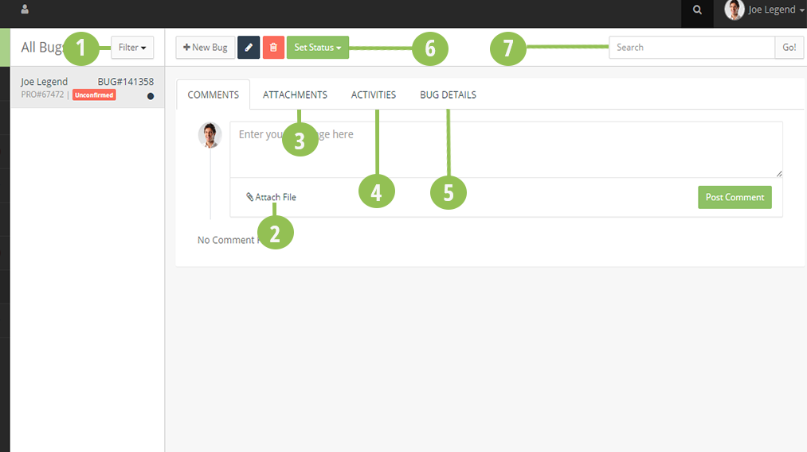
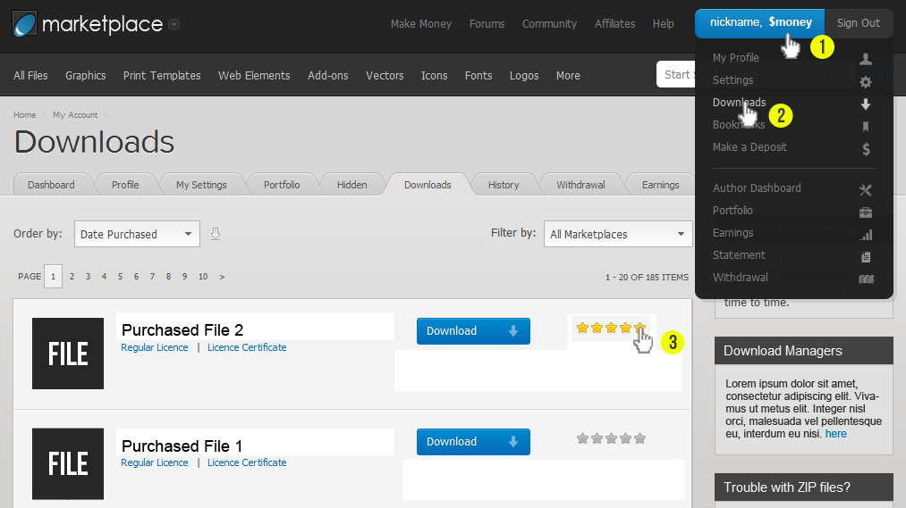

Freelancer Office
Modern full-featured project management system for Freelancers
THANK YOU FOR PURCHASING FREELANCER OFFICE!
Here are some basics on installing, configuring and customizing Freelancer Office.
Notes
I would like to remind you that I only provide support for verified buyers. To confirm your purchase, please send me a message via my profile page here.
Freelancer Office is provided "as is". Customizing code and other design related issues can be done as freelance work, for script customizations send me a message via Envato Market.
Thank you!
Freelancer Office Installation
Server Requirements
-
Local Server XAMPP, WAMP or any Apache with PHP and MySQL server.
- Mod Rewrite Enabled
- CURL Enabled
- CRONs for Auto email outdated Invoices and Projects
-
Live server (preferably a sub-domain).
-
If you need your emails delivered via Transactional Emails, We recomend using Postmark Transactional Emails.
Quickstart Installation
Freelancer Office comes with a Web Installation Page. Once your environment is ready, follow this quick guide:
- Download a copy of Freelancer Office from Envato Market.
- Extract the file FreelancerOffice-[VERSION].zip to htdocs folder in XAMPP or www folder in WAMP or Upload it as ZIP file if installing to your Online Server using FTP and remember to Extract it to a folder on your Live Server.
- Open your favourite MySQL Administration tool e.g PHPMyAdmin and create a database Example: FreelanceOffice
- Open your favorite browser and type in the address bar http://your-domain.com/FOLDERNAME/install
- Enter the BASE URL (Example: http://your-domain.com/FOLDERNAME/ ) remember to End with forward slash
- Enter your MySQL host, Database Name, MySQL Username and Password.
- Lastly, enter your company's Official Email Address - If using Postmark Transactional Emails, this email will be used as the FROM Address when email notifications are sent.
- Click Install and Freelancer Office will create the necessary tables and create a database configuration file. After the Installation please remove or rename the Install Folder.
- Login using admin and password admin
- If you can't access the login page or get an error "No file input selected" check your .htaccess file and that Mod_Rewrite is enabled.
Manual Installation
You may use this method if the Quick Installation fails or you get an error. So here's what you have to do:
Freelancer Office Ugrading
Back up your files and your Database before proceeding.
Ugrading from Version 1.57 to Version 1.6
To upgrade Freelancer Office please proceed as follows:
- Login as admin.
- On the top right links click Updates link.
- If an update is available, it will be downloaded to your server in YOUR ROOT/UPDATES folder.
- Click install updates
- After the update installation, click Update Database to modify your database schema.
- If everything went correctly, you should be redirected to the updates page with a message Database Schema updated successfully.
- Incase you encounter any problems, please get in touch via Envato Profile.
- To Install a fresh copy of Freelancer Office Version 1.6, use the Installation guide above.
Rename or delete your install folder after installation.
Invoices
Creating an Invoice
With Freelancer Office, you can Invoice your clients on the Go and receive Invoice Payments via PayPal. Other Payment gateways will be included in next releases.
The Invoice modules architecture are shown below:
Admin: application/modules/invoices
Collaborator: application/modules/collaborator
Clients: application/modules/clients
To edit the Invoice fields open application/modules/invoices/controllers/manage.php and edit the lines below:
$form_data = array(
'reference_no' => $this->input->post('reference_no'),
'client' => $this->input->post('client'),
'due_date' => $this->input->post('due_date'),
'tax' => $this->input->post('tax'),
'notes' => $this->input->post('notes'),
);
$this->db->insert('invoices', $form_data);
$invoice_id = $this->db->insert_id();
Remember to add the field to the Database Table fx_invoices

Part Definitions
Contents:
-
1: Create Invoice using this Icon.
-
2: Freelancer Office allows you to save commonly used items as templates. Use this icon to quickly add a saved item to the Invoice.
-
3. You can make offline payments to an Invoice directly and select the payment method used. A thank you email will be sent to the client automatically.
-
4. Select this button for additional functions e.g Send Reminder or Email Invoice.
-
5. Generate a PDF copy of your Invoice and download it to your computer.
To edit Email Invoice open application/modules/controllers/manage.php
function emailinvoice(){
if ($this->input->post()) {
$invoice_id = $this->input->post('invoice_id');
$ref = $this->input->post('ref');
$subject = $this->input->post('subject');
$clientname = str_replace("{CLIENT}",$this->input->post('client_name'),$this->input->post('message'));
$amount = str_replace("{AMOUNT}",$this->input->post('amount'),$clientname);
$currency = str_replace("{CURRENCY}",$this->config->item('default_currency'),$amount);
$link = str_replace("{LINK}",base_url().'invoices/view/'.$ref,$currency);
$message = str_replace("{COMPANY}",$this->config->item('company_name'),$link);
$this->_email_invoice($invoice_id,$message,$subject);
$this->db->set('emailed', 'Yes');
$this->db->set('date_sent', date ("Y-m-d H:i:s", time()));
$this->db->where('inv_id',$invoice_id)->update('invoices');
$activity = 'INVOICE #'.$ref. ' marked as Sent';
$this->_log_activity($invoice_id,$activity,$icon = 'fa-envelope'); //log activity
$this->session->set_flashdata('response_status', 'success');
$this->session->set_flashdata('message', lang('invoice_sent_successfully'));
redirect('invoices/manage/details/'.$invoice_id);
}else{
$data['invoice_details'] = $this->invoice->invoice_details($this->uri->segment(4));
$this->load->view('modal/email_invoice',$data);
}
}
If you like you may add a logo to your Invoice before the lines below
application/modules/invoices/views/invoice_details.php
$this->config->item('company_address')
lang('phone'): $this->config->item('company_phone')
You can save commonly invoiced items by clicking on the ITEMS and Add New. After that you can select Quick Add in an Invoice and add your Items and enter the quantity.
Projects
You can create and organize your projects using Freelancer Office. After creating a project you can add comments, tasks, start/stop project timer,start/stop tasks time and set your project progress to auto calculate. To Auto Calculate a project Progress the Estimated time must be set.If you assign a project to a collaborator, they will have access to the complete project including tasks and receive email notifications about the activity. For Instructions on how to set CRON for automatic emails when a project is overdue, Please read on how to set CRON below this guide.
Project Dashboard

This stands as a comprehensive and complete guide on how to manage your projects and tasks.
- 1. Visual representation of the closed and open tasks in the Project.
- 2. Use the button to add a task to the project. Enter the task name and estimated hours and click save Task. An email will be sent to the assigned user.
- 3. This tab contains files uploaded by admin, project manager and clients to the project. You can download a copy of the file directly to your local disk.
- 4. This tab displays the Project timesheet and the time spent on tasks. Each time the timer is started and stopped the time spent is logged here with the date and no. of hours spent.
- 5. Use this button to start task timer. After completing the task, click stop timer to log the time spent to the project.
- 6. Use this field to type a comment to the project. Your client will receive an email and you receive a comment when your client comments on the project.
- 7. Use this option to Edit project or delete the project from the system. If you set a project progress to 100% the project is marked as complete and your client receives an email on the complete project.
- 8. Use this button to start/stop project timer. When you are done with the project, click stop timer and the time spent is logged to the project hours spent.
Projects Module structure
If you need to add a field to the projects edit application/modules/projects/controllers/view.php and add the field to the add() method:
$form_data = array(
'project_code' => $this->input->post('project_code'),
'project_title' => $this->input->post('project_title'),
'client' => $this->input->post('client'),
'start_date' => $this->input->post('start_date'),
'due_date' => $this->input->post('due_date'),
'progress' => $this->input->post('progress'),
'description' => $this->input->post('description'),
'estimate_hours' => $this->input->post('estimate'),
'assign_to' => $this->input->post('assigned_to')
);
$this->db->insert('projects', $form_data);
$project_id = $this->db->insert_id();
Remember to add the HTML field to application/modules/projects/views/create_project.php
Projects Tasks structure
If you need to add a field to the tasks edit application/modules/projects/controllers/tasks.php and add the field to the add() method:
$form_data = array(
'task_name' => $this->input->post('task_name'),
'project' => $this->input->post('project'),
'assigned_to' => $this->input->post('assigned_to'),
'visible' => $visible,
'progress' => $this->input->post('progress'),
'description' => $this->input->post('description'),
'estimated_hours' => $this->input->post('estimate'),
'added_by' => $this->tank_auth->get_user_id(),
);
$this->db->insert('tasks', $form_data);
Remember to add the HTML field to application/modules/projects/views/modal/add_task.php
Payments Module
Freelancer Office supports online payments via PayPal and offline payments. We will be including other payment options as we continue to improve Freelancer Office.

Payments Module structure
If you need to add a field to the payments application/modules/invoices/controllers/manage.php and add the field to the pay() method:
$form_data = array(
'invoice' => $this->input->post('invoice_id'),
'paid_by' => $this->user_profile->get_invoice_details($invoice_id,'client'),
'payment_method' => $this->input->post('payment_method'),
'amount' => $this->input->post('amount'),
'trans_id' => $this->input->post('trans_id'),
'notes' => $this->input->post('notes'),
'month_paid' => date('m'),
'year_paid' => date('Y'),
);
$this->db->insert('payments', $form_data);
Remember to add the HTML field to application/modules/invoices/views/modal/pay_invoice.php
Everytime a payment is made for an Invoice, Freelancer Office sends a thank you email to the client after applying the amount paid to the Invoice. Thank you message email can be edited here application/modules/invoices/views/emails/thank_you_message.php
Paypal is the only supported payment method in Version 1.1
If you need to make adjustments to the PayPal payment code, edit application/modules/paypal/controllers/paypal.php
function pay()
{
$userid = $this->tank_auth->get_user_id();
$invoice = $this->AppPay->invoice_info($this->uri->segment(3));
$invoice_cost = $this->user_profile->invoice_payable($invoice['inv_id']);
$payment_made = $this->user_profile->invoice_payment($invoice['inv_id']);
$inv_tax = $invoice['tax']?$invoice['tax']:$this->config->item('default_tax');
$tax = ($inv_tax/100) * $invoice_cost;
$invoice_due = ($invoice_cost + $tax) - $payment_made;
$data['invoice_info'] = array('item_name'=> $invoice['reference_no'],
'item_number' => $invoice['inv_id'],
'amount' => $invoice_due) ;
if ($this->config->item('paypal_live') == 'FALSE') {
$paypalurl = 'https://www.sandbox.paypal.com/cgi-bin/webscr';
}else{
$paypalurl = 'https://www.paypal.com/cgi-bin/webscr';
}
$data['paypal_url'] = $paypalurl;
$this->load->view('form',$data);
}
Paypal IPN is located in application/modules/paypal/controllers/t_ipn.php
if ($this->_payment_is_valid($invoice_id,$paid_amount)) {
$p_info = array(
'invoice' => $invoice_id,
'paid_by' => $client,
'payer_email' => $client_email,
'payment_method' => '1',
'amount' => $paid_amount,
'trans_id' => $txn_id,
'notes' => 'Paid by '.$first_name.' '.$last_name.' to '.$receiver,
'month_paid' => date('m'),
'year_paid' => date('Y'),
);
$this->db->insert('payments',$p_info);
After an invoice has been paid, an email is sent to the client. To edit this message use application/modules/paypal/views/InvoicePaid.php
Fields sent to PayPal using the form are listed below:
- rm - value="2"
- cmd - value="_xclick"
- currency_code - value="DEFAULT CURRENCY"
- quantity - value="1"
- business - value="YOUR PAYPAL EMAIL"
- return - value="PAYPAL SUCCESS URL"
- cancel_return - value="PAYPAL CANCEL URL"
- notify_url - value="PAYPAL IPN URL"
- custom - value="USER ID"
- item_name - value="INVOICE REF NUMBER"
- item_number - value="INVOICE ID NUMBER"
- amount - value="AMOUNT PAID"
You will need to have a PayPal Account to receive payments via PayPal.
Messaging System
Freelancer Office includes a Messaging System that can be used to exchange messages between Project Managers, Clients and Admins.
Everytime you receive a message, you get an email notification with the message received. To edit the Email Sending notifications, edit the file application/modules/messages/views/emails/message_notification.php.

You'll need to select a recipient and type a message to send to the user. Use the search form field to search through your messages.
You can view a conversation between you and other users by clicking on the name of the recipient.
Messaging Module Structure
If you need to add a field to the messaging system edit application/modules/messages/controllers/conversation.php and add the field to the send() method:
$message = $this->input->post('message', TRUE);
$user_to = $this->input->post('user_to', TRUE);
$form_data = array(
'user_to' => $this->input->post('user_to', TRUE),
'user_from' => $this->tank_auth->get_user_id(),
'message' => $this->input->post('message'),
);
$this->db->insert('messages', $form_data);
$this->_message_notification($user_to,$message);
Bug Tracker
Freelancer Office allows you to track bugs reported by clients and mark them as Confirmed, In Progress, Resolved and Verified.
The bug statuses above means:
- Unconfirmed: This is the default bug status and means that the bug hasn't been confirmed by the project manager or admin.
- Confirmed: Means the project manager has acknowledged that indeed there is a bug that needs to be rresolved.
- In Progress: Means the bug has been assigned to someone and will be fixed by the Project Manager or the Admin.
- Resolved: Means the bug has been resolved and the client will need to verify that the bug is fixed and the bug ready to be marked as Verified.
- Verified: Means the Client has accepted the fix and the bug has been fully resolved.
You'll need to select a recipient and type a message to send to the user. Use the search form field to search through your messages.
You can view a conversation between you and other users by clicking on the name of the recipient.
Bug Module Structure
If you need to add a field to the bug tracker edit application/modules/bugs/controllers/view.php and add the field to the add() method:
$form_data = array(
'issue_ref' => $this->input->post('issue_ref'),
'project' => $this->input->post('project'),
'reporter' => $this->input->post('reporter'),
'assigned_to' => $this->input->post('assigned_to'),
'bug_status' => 'Unconfirmed',
'priority' => $this->input->post('priority'),
'bug_description' => $this->input->post('description'),
'last_modified' => date("Y-m-d H:i:s"),
);
$this->db->insert('bugs', $form_data);
$bug_id = $this->db->insert_id();
An email is sent each time a user is assigned to a bug. You may want to edit the email assignment notification message here application/modules/bugs/views/emails/assigned_notification.php

- 1: You can filter your bugs on statuses Unconfirmed, Confirmed , In Progress, Resolved and Verified.
- 2: Post a comment to the bug or attach a file to the bug with a description.
- 3: View files attached to your bug by project manager and client.
- 4: Use this tab to view bug activities logged by the system.
- 5: View bug details including the assigned user and bug description.
- 6: Change the status of the bug. An email will be sent to the client when you change the bug status.
- 7: Use this field to search for a bug using the issue number. If results are found matching your input, they will be displayed in the left side panel.
System Settings
The following settings available on Freelancer Office are explained according to how they are grouped in the script.
General Settings
- Company Name: Your company name.
- Contact Person: An individual representative of your company.
- Company Address: Your company's primary address
- Company Phone: Your company's phone number.
- Company Domain: Your company's website.
- Country: Your company's country.
- City: The city where your company is located.
Payments Settings
- Default Tax: This tax will be applied to your Invoices.
- Default Currency: The default currency to be used by Paypal in client payments.
- Currency Symbol: Your default currency symbol - default is $
- Paypal Live: Select whether Paypal Live should be used or sandbox.
- Paypal Email: The email that receives the payments from PayPal. You must have an account with this email on Paypal site.
- Paypal Cancel URL: The URL that clients will be redirected to incase they cancel their invoice payments.
- Paypal IPN URL: The URL that Paypal will send the values of the transaction that has just taken place. Leave default unless you need to make changes to this.
- Paypal Success URL: The URL that clients will be redirected to after the Payment has been made. Leave the default value unless you need to change it.
System Settings
- Base URL: Do not change this unless it's neccesary.
- Default Language: The language that will be used by the system. Read below on how to add a new language to Freelancer Office.
- File Max Size: The maximum file upload size allowed.
- Allowed Files: The file extensions accepted by the system for uploads. The file types should be separated with a |
- Demo Mode: If set to TRUE, the system will disable other features including file uploads and should be used only for testing. After testing you may want to set it to FALSE to allow file uploads and updating settings values.
- Default Terms: This message will appear below the Invoices.
Email Settings
- Company Email: Your company email that will appear as FROM in emails. This email will be used incase you use POSTMARK to send emails. Read below on how to setup postmark.
- Email Protocol: The email protocol to be used when sending emails. If you choose the SMTP method, you must set the HOST,USERNAME and PASSWORD.
- SMTP HOST: The SMTP Host if using SMTP.
- SMTP USER: Your SMTP username.
- SMTP PASSWORD: Your SMTP Password.
- SMTP PORT: Your SMTP Port number. Usually 25
Email Templates
- Estimate Message: The email that will be sent to your clients when you send them an Estimate.
- Invoice Message: The message that will be sent to your client when you send them an Invoice.
- Reminder Message: The message that will be sent to your clients when you send a Invoice Reminder.
Adding a new Language to the System
Freelancer Office comes with 6 languages however you may add your own language using the steps below:
Setting up CRONS
To run CRON Jobs, you need a cron key. You will get your CRON Key in fx_config table in your database with the Key cron_key and the default key 34WI2L12L87I1A65M90M9A42N41D08A26I. You will need to change this for security reasons. This value can be any combination of letters and numbers.
After obtaining the key, set a CRON that runs daily on your server so it checks for Invoices and Projects that are almost overdue.
Example CRON to check for Overdue Projects
CURL http://your-domain.com/appcrons/projects_cron/34WI2L12L87I1A65M90M9A42N41D08A26I - Set to run daily.
The 3rd segment of your URL must contain your CRON Key otherwise you will get a wrong CRON Key error message.
Example CRON to check for Overdue Invoices
CURL http://your-domain.com/appcrons/invoices_cron/34WI2L12L87I1A65M90M9A42N41D08A26I - Set to run daily.
The 3rd segment of your URL must contain your CRON Key otherwise you will get a wrong CRON Key error message.
Using POSTMARK to send Emails
You can use postmark to send emails directly to your client's inbox. To use Postmark follow the steps below.
- Open application/config/postmark.php and set your API Key, EMAIL FROM NAME and FROM ADDRESS.
$config['api_key'] = '';
/*
|--------------------------------------------------------------------------
| FROM NAME & FROM ADDRESS
|--------------------------------------------------------------------------
|
| These are optional settings
|
| If you're going to be using the same Sender Signature for all emails, it
| might be easier to assign it here, than doing so with each individual
| email. If you are not using this setting, comment it out.
|
| Configure your Sender Signatures at http://postmarkapp.com/signatures
*/
$config['from_name'] = '';
$config['from_address'] = '';
- Open fx_config table in your database and set the value of the key USE_POSTMARK as TRUE.
- Ensure that the email you are using is verified by Postmark otherwise it won't work. The Company Email should be the same with the Postmark From Email address to avoid errors.
- Now each time you send emails, Freelancer Office uses Postmark to deliver your mails and not SMTP or mail function
You Like My Work?
If you have any idea on improving Freelancer Office or would just wish to contribute something, you are highly welcome to do that especially translating it to other languages. The development of Freelancer Office is active on Bitbucket so all issues can be submitted to the REPO and we will do our best to resolve all reported issues and improve Freelancer Office.
Don't forget to rate our work. If you haven't got a clue on how to rate, here's a how to guide:
